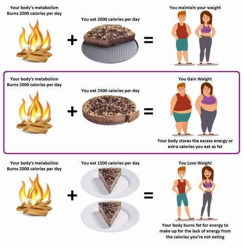
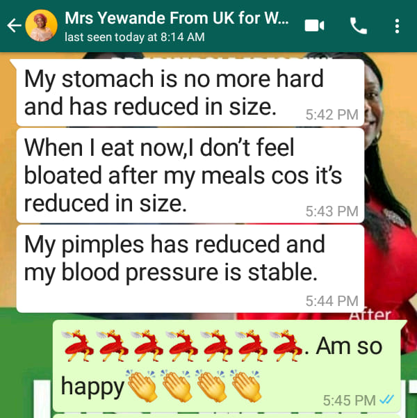
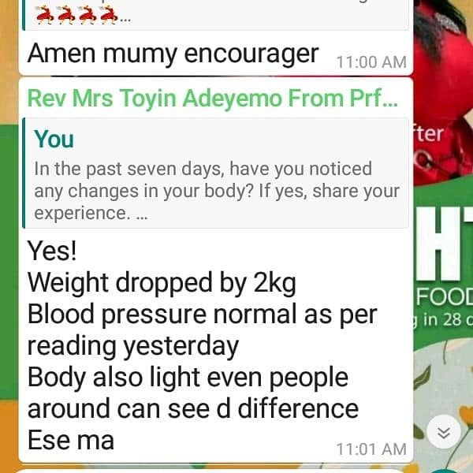
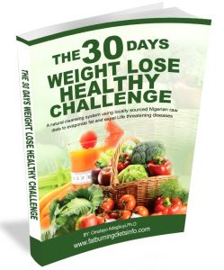

Hello, and welcome to this page.
Favour is my name, and I will be sharing with you Why You Shouldn't Exercise to Lose Weight.
I have been asked by many of my friends about how to lose weight naturally and if exercise is the most important aspect of losing weight, because they know that I’m an online fitness coach.
Infact, most of them tried in the past, and failed in various exercise routine.
So, I decided to create this short article so that you can benefit from it.
Many of us are putting on our running shoes and starting (or renewing) fitness routines in the goal of losing weight. Attempting to be more active is undeniably beneficial. However, if your primary motivation is to reduce weight, your New Year's resolution may backfire.
"Here are the most common reason Why You Shouldn’t Exercise to Lose Weight."
So listen.
1. It is more easier to avoid food that will let you gain weight than Exercising.
For starters, most forms of exercise—at least the ones we do—are unhelpful for weight loss. Take, for example, walking. A 68kg person walking briskly for 30 minutes will burn roughly 140 calories on average. That's about the same as one can of soda—not exactly a good return on your time and work. It's much simpler to simply avoid the soda.
Overall, studies show that moderate-intensity aerobic exercise, such as walking for 30 minutes five days a week—the amount recommended for optimal health—usually results in little or no weight loss when done alone.

photo from nigeriafitness website
2. Exercise sessions must go beyond what most of us are ready or capable of to see a significant result.
When moderate exercise is combined with a healthy diet, the outcomes are disappointing as well. After combining data from six trials, researchers discovered that a combination of diet and exercise resulted in no more weight loss after six months than diet alone. At 12 months, the diet-exercise combination had a tiny advantage—about 2kg on average. The difference was less than 1kg in another evaluation of research.
Participants in studies where exercise resulted in significant weight loss expended at least 400 to 500 calories per session on five or more days per week. A 68kg person would need to do 90 minutes of brisk walking or 30 minutes of running 8-minute miles every day to achieve this. In other words, sessions must go well beyond what the majority of us are ready or capable of. Even if we manage to put in that much effort, our systems frequently compensate by increasing hunger and slowing metabolism, both of which have the effect of limiting how many pounds we may lose over time.
3. We most likely stop exercising when we failed on our weight-loss goals.
When exercise fails to reach our weight-loss goals, we become disillusioned and stop exercising.
This was a common response in a study of 30 overweight persons who completed a 12-week exercise program and were questioned afterward: "It was pretty upsetting because I didn't drop a single pound and... it kind of made me give up."
Another person who struggled to lose weight characterized her workouts as "bashing my head against a brick wall." It's safe to presume she didn't return.
4. We often use exercise as a form of punishment for bad behavior.
The main issue with exercising to lose weight is that it turns physical activity into a punishment—a price we must pay in exchange for a thinner physique.
How many times have you overheard someone say something like this? (Or have you stated to yourself) "I'll have to do some additional exercise" after eating too much during the holidays or during a celebration dinner? We use exercise as a type of self-punishment for our "poor" behavior.
When we focus on our well-being rather than our weight, we are more likely to perceive exercise positively and actually do it. For some, the motivation could be a better mood or fewer stress. Others may discover that exercising makes them feel physically and mentally stronger, as well as more in control of their lives.
The advantages of physical activity, of course, go much beyond these.
It has been demonstrated to lower the risk of heart disease, stroke, cancer, diabetes, dementia, depression, colds, back pain, osteoporosis, and mortality. It can also help us sleep better, have more energy, fight against aging, and improve our sexual lives.
While exercise isn't very effective at losing weight, it can help you avoid gaining weight and enhance your appearance by increasing muscle mass. People who exercise report feeling physically and mentally stronger and more in charge of their lives.
This article is no way discrediting exercise but to let you know that there are better options to losing weight which doesn’t require much effort and stress that exercise demands.
How can I start to lose weight fast…with little or NO exercise?
Fortunately, I have a super resource for you..
This resource has helped over 1000 Nigerians to lose weight naturally with little or no effort. Below are some of the screenshots of testimonies from those who have used it.


If you would like to get to this guide, then click on the link below
(Fill in the form below) and get to the resource offer. OR contact me on WhatsApp and I will send it to you immediately.

Click On The Button Below To Contact Me On WhatsApp